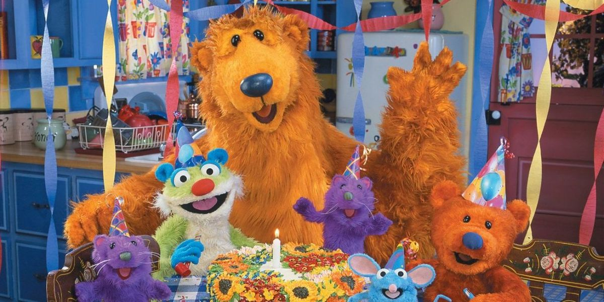
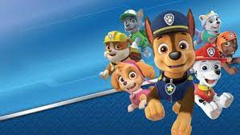
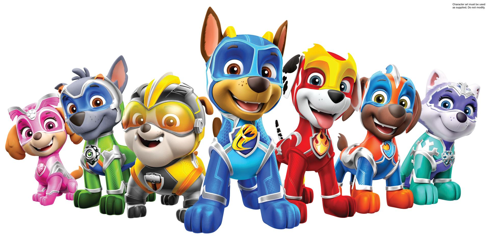

Bear and the Big Blue House
Bear and the Big Blue House is one of my favorite shows! It was filmed from 1997 to 2003.
My favorite characters are Bear, Tutter, Treelo and Shadow! I like it when Luna and Bear sing the
"Goodbye" song at the end.

Paw Patrol
The Paw Patrol is lead by my main man Ryder. He has lots of rescue dogs that call themselves the PAW Patrol. They work together on missions to protect the shoreside community of Adventure Bay. My favorite pups are Marshall, Zuma, Skye and Chase.

Mighty Pups
In Paw Patrol Mighty Pups, Mayor Humdinger and his nephew Harold accidentally divert a meteor towards Adventure Bay. The meteor's golden energy grants the PAW Patrol superpowers. The heroic MIGHTY PUPS are on a roll to super-save the day.